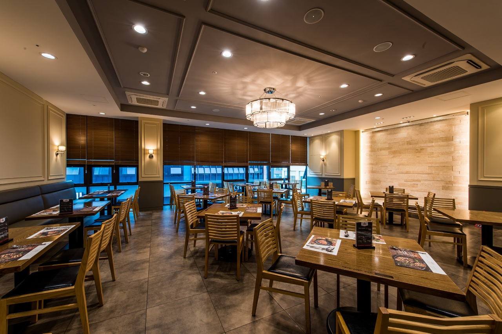

Herzlich Wilkommen
Wir freuen uns Sie in unserem Restaurant Der alte Temeswar begrüßen zu dürfen.
Bei uns werden Sie verwöhnt sein mit einer großen Auswahl aus dem traditionellen Essen aus Banat der
westliche Teil aus Rumänien und mit einem vielfältigen Speisen aus den Nord Schwarzwald .
Unsere Öffnungszeiten
12:39 13/06/2020
Mo-Fr: 12.00-23:00 Uhr
Sa: 11.00-24:00
So: 11.00-24.00
Anfahrt
Unser Restaurant Der alte Temeswar befindet sich in der Calwerstraße 1, 22222 Stuttgart.Fahren Sie über
A81 und nehmen Sie die Ausfahrt A8 in Richtung Stuttgart.
Dort ist unser Restaurant vorzufinden.
Team
Wir laden Sie ein unsere Team kennenzulernen.